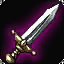
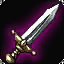
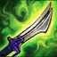
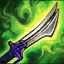
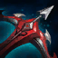
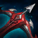

Riven Top / Mid
-
Cách lên đồ cơ bản cho riven
 
hoặc
Khiên Doran + Bình máu là 2 trang bị khởi đầu đường trên được người sử dụng nhiều cho Riven, tuy nhiêu nếu bạn muốn tay đôi mang Thiêu đốt solo Q đối thủ thì có thể chọn Kiếm Doran hoặc Kiếm Dài
Với Riven đi rừng
và
Rựa Thợ Săn và Thuốc Tái Sử Dụng là 2 trang bị đi Rừng khởi đầu được người chơi ưa thích và sử dụng nhiều cho Riven
Lên giày cho Riven
->

->

Đường trên thường là những tướng thiên về sát thương vật lý nên hãy dùng Giày Ninja để giúp cô nàng có thể chống chịu tốt hơn. Hoặc cũng có thể chọn Giày Thủy Ngân nếu đối thủ là Pháp sư hoặc có nhiều hiệu ứng khống chế. Khi đi Rừng cũng có thể chọn Giày khai sáng giảm thời gian hồi chiêu giúp cho bộ Combo của cô nàng nhanh hơn.
-
Trang bị chính cho riven


Riven rừng

Rìu đen: là trang bị trấn phái cần thiết không thể thiểu của Riven, thời gian hồi chiêu, phần trăm xuyên giáp và máu cộng thêm -> đó là tất cả những gì mà Riven cần có để tối đa sát thương từ bộ kỹ năng của mình.
-
Trang bị tùy chọn cho riven


 



 



-
Cách lên đồ cho Riven Top / Mid
Kiếm ma Youmuu: sẽ giúp tăng sát thương khả năng sốc damge cực mạnh cho Riven oneshot combo, Rìu mãng xà: giúp khả năng clear dọn lính nhanh hơn đồng thời cũng cung cấp lượng sát thương và khả năng hồi phục đáng kể, tăng khả năng đi đường và snowball trận đấu.
Vũ Điệu Tử Thần: là một món trang bị hoàn hảo sinh ra để dành cho Riven, sát thương vật lý cao, giảm thời gian hồi chiêu và thêm chút ít khả năng sống sót, cực kỳ phù hợp với cô nàng
Giáp thiên thần: tăng thêm độ an toàn cho những pha lao vào giao tranh làm choáng, gây sát thương của Riven.
Riven là tướng có khả năng dồn sốc sát thương cực nhanh và mạnh với bộ kỹ năng Combo ảo diệu, vì vậy cách lên đồ full Sát lực là chuẩn nhất cho cô nàng. Đây là bộ trang bị mạnh nhất cho Riven đi Top, cũng là cách lên đồ của BoxBox - người chơi Riven đỉnh cao best thế giới.
Nếu bạn đi đường với tướng pháp sư hoặc nhiều hiệu ứng khống chế: nên chọn lên Giày thủy ngân và Đao thủy ngân hoặc Chùy gai: sẽ giúp Riven dễ thở hơn khi đối đầu với tướng ap như: Rumble, Kennen, Vladimir... và tránh không bị dồn sốc damge.
hoặc có thể chọn: Khăn giải thuật trước -> cuối game sẽ hoàn thành Đao thủy ngân.
-
Cách lên đồ cho riven đi rừng
Cách lên đồ đi Rừng cũng khá giống đi Top, cứ full bộ sát lực nhé.
Rìu mãng xà: sẽ giúp bạn farm quái rừng nhanh hơn, có nhiều thời gian đảo đường đi gank hỗ trợ đồng đội hoặc có thể qua cướp rừng của đội bạn.